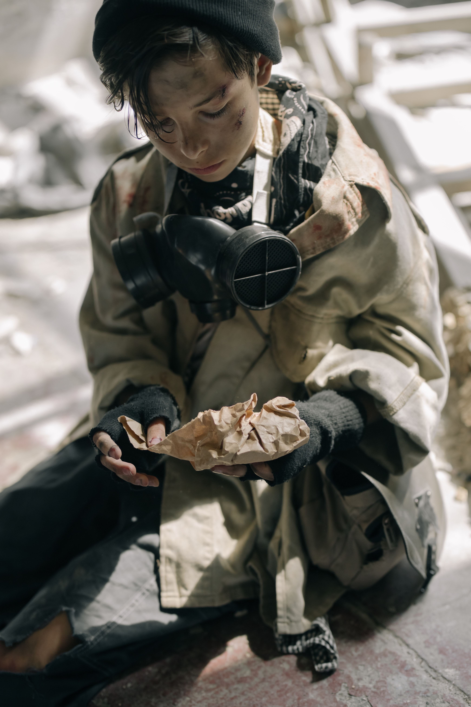
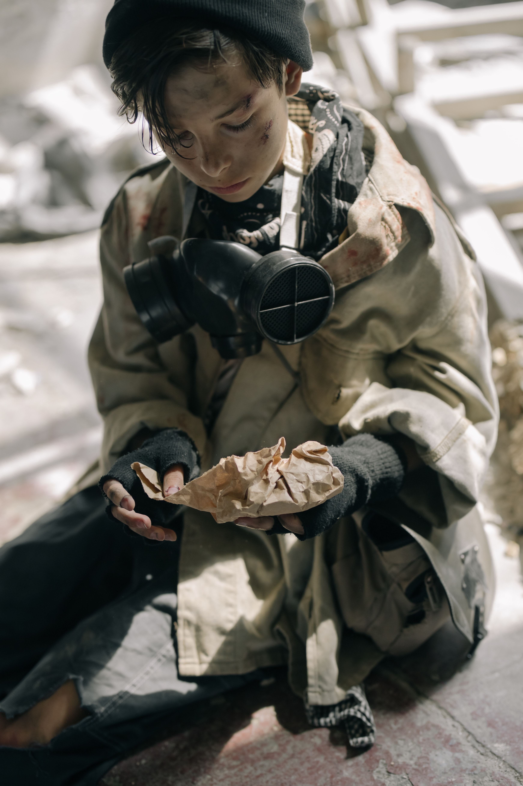

Hunger
Hunger is a pervasive issue in our society, affecting millions of
individuals and families. It can be caused by a variety of factors,
including poverty, job loss, and natural disasters. Harvest Hope is
an organization that aims to address the issue of hunger by
providing food and other resources to those in need. Through their
various programs, including food pantries, emergency food
assistance, and mobile food banks, Harvest Hope is able to make a
tangible impact on the lives of those struggling with hunger. They
also offer volunteer opportunities and training, as well as
educational resources and advocacy efforts, to help address the root
causes of hunger and create long-term solutions.

 
